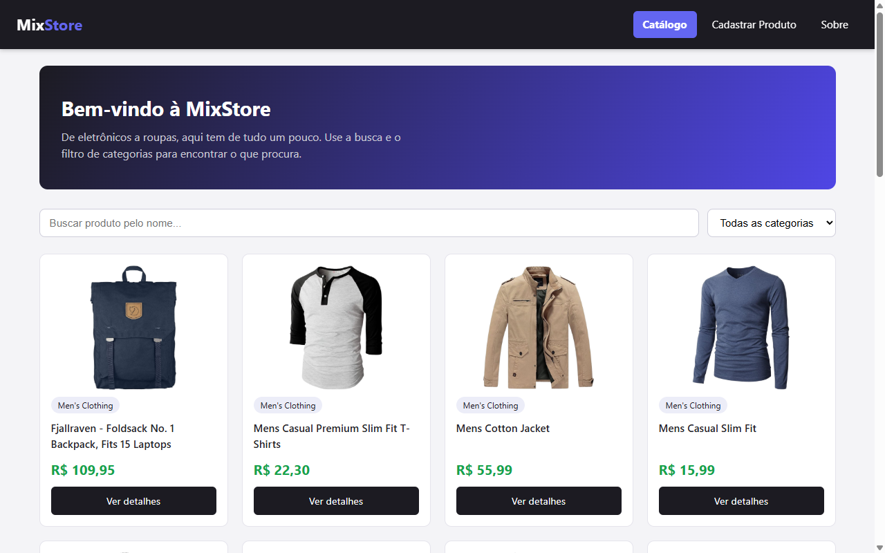
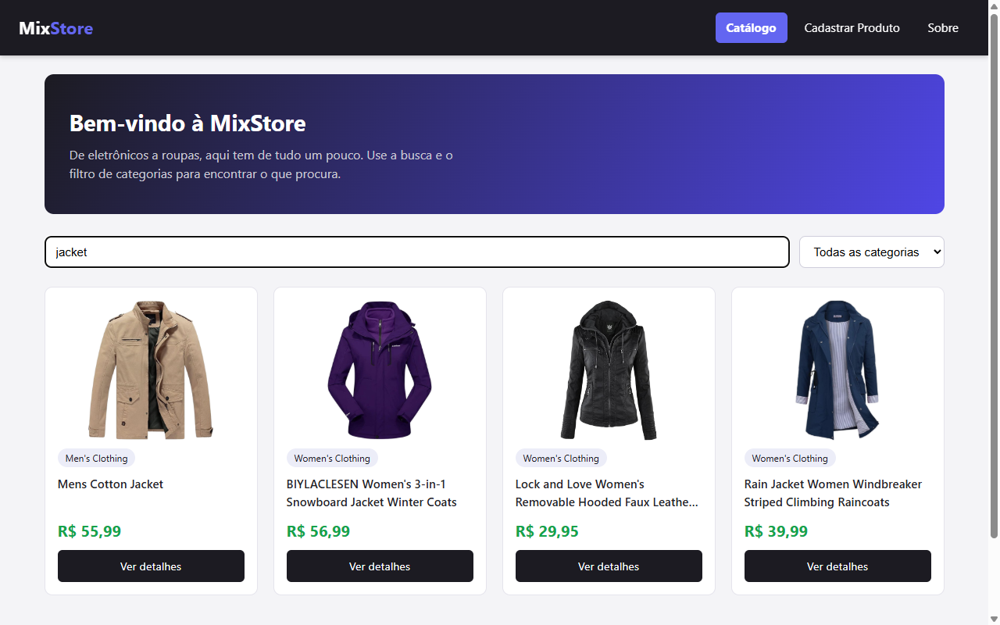
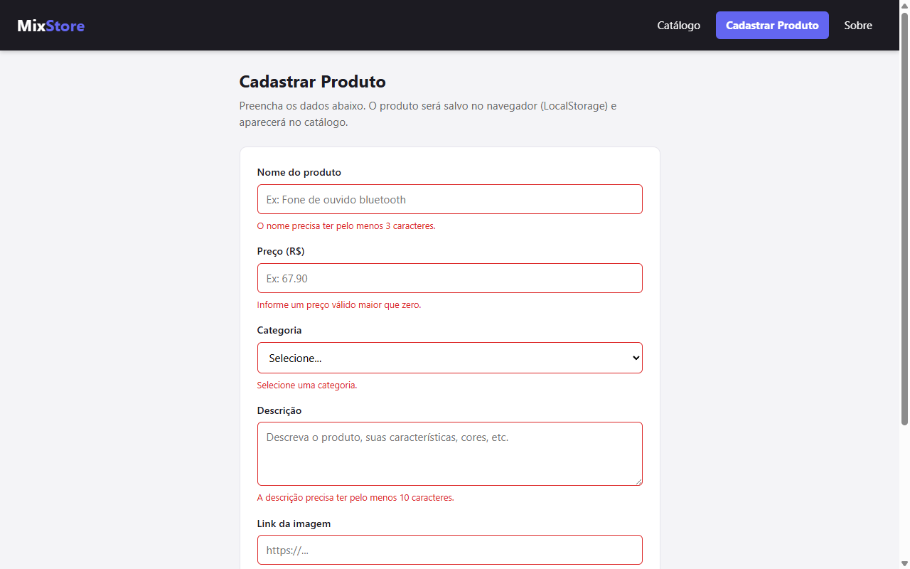
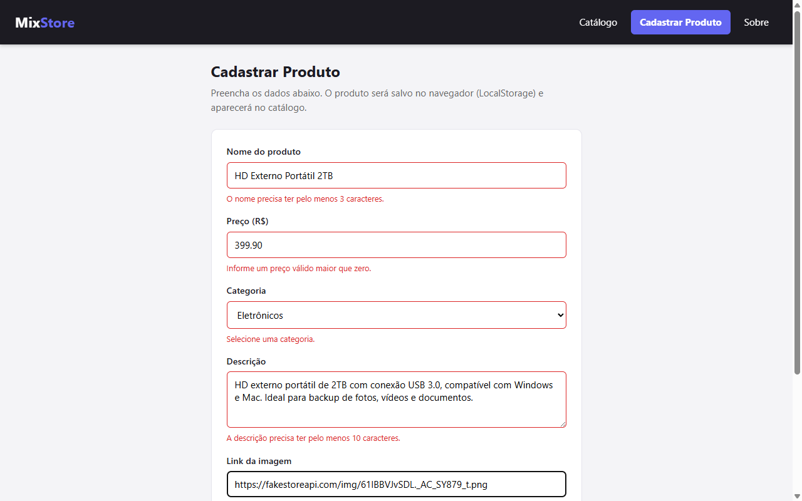
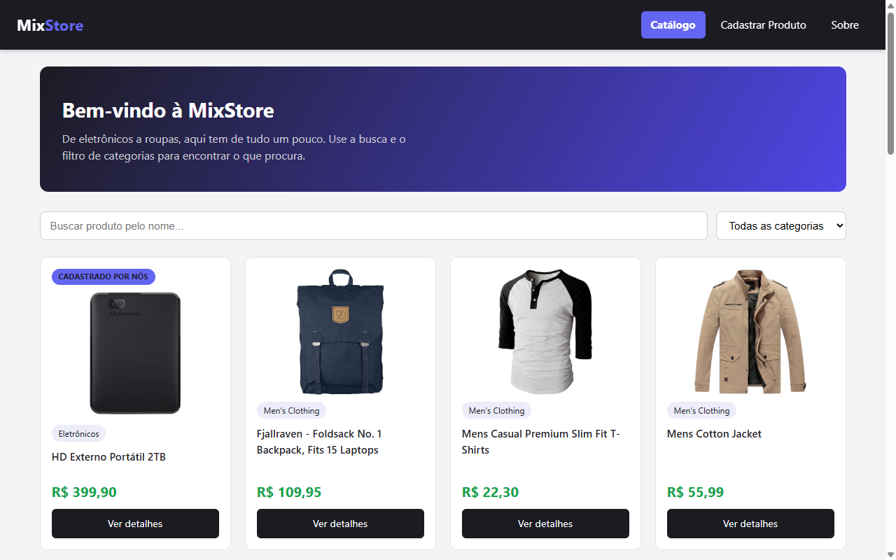
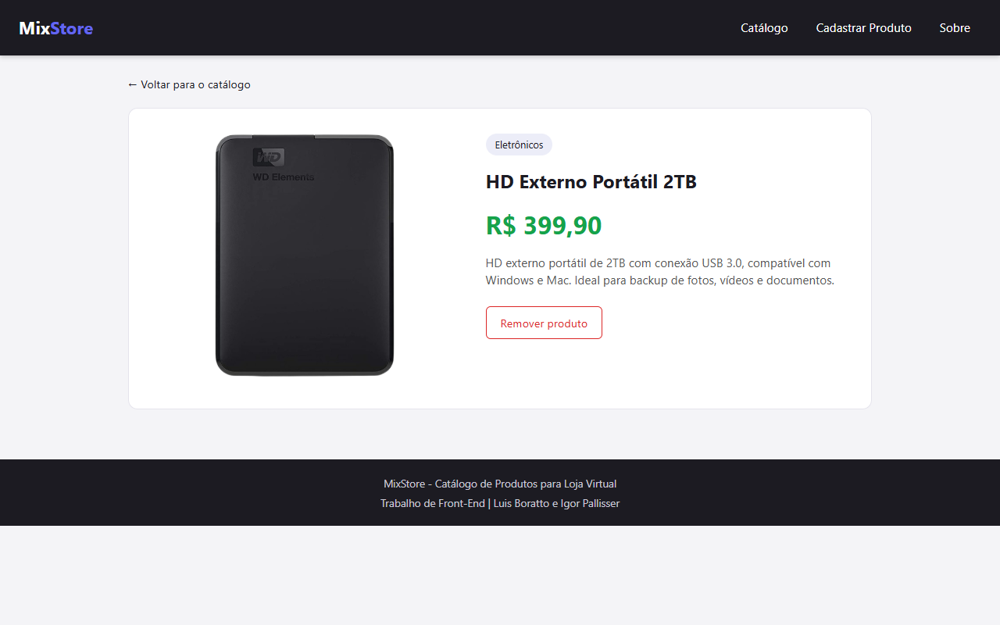
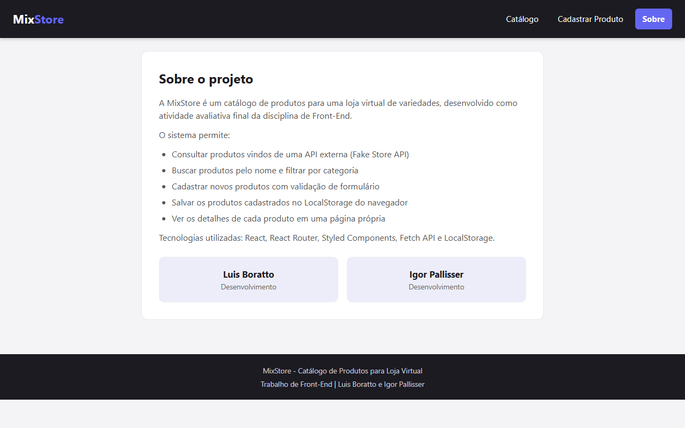
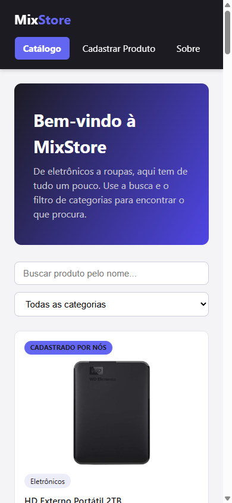

UNICESUMAR - UNIVERSIDADE CESUMAR
CAMPUS PONTA GROSSA
CATÁLOGO DE PRODUTOS PARA UMA LOJA VIRTUAL
MIXSTORE
Atividade Avaliativa Final - Disciplina de Front-End
Profª. Me. Emili Everz Golombiéski
Luis Boratto
Igor Pallisser
Luiz Henrique de Morais Franco
Ponta Grossa
Junho de 2026
Este relatório apresenta o desenvolvimento da MixStore, um sistema web de cadastro e consulta de produtos para uma loja virtual, criado como atividade avaliativa final da disciplina de Front-End. O tema escolhido pelo grupo foi "Catálogo de Produtos para uma Loja Virtual".
A ideia do projeto foi simular o catálogo de uma loja de variedades, onde o usuário consegue visualizar os produtos disponíveis, pesquisar pelo nome, filtrar por categoria, ver os detalhes de cada item e tambem cadastrar produtos novos. Os produtos exibidos no catálogo vêm de duas fontes: uma API externa (Fake Store API), que fornece os produtos iniciais da loja, e o LocalStorage do navegador, que guarda os produtos cadastrados pelo próprio usuário.
As principais funcionalidades do sistema são:
O projeto utiliza HTML5 com estrutura semântica. No arquivo index.html definimos o
idioma da página (lang="pt-BR"), a codificação UTF-8 e a meta tag viewport, que é
essencial para a responsividade. Dentro dos componentes React, usamos as tags semânticas
adequadas para cada parte da interface: <header> para o cabeçalho com o menu,
<nav> para a navegação, <main> para o conteúdo principal de
cada página, <section> para as seções (banner, filtros e grade de produtos),
<article> para cada card de produto e <footer> para o rodapé.
Nos formulários, todos os campos possuem <label> associado pelo atributo
htmlFor, e as imagens possuem texto alternativo no atributo alt.
Para o layout usamos os três conceitos vistos em aula: Box Model, Flexbox e Grid Layout.
O Box Model aparece em toda a aplicação - aplicamos box-sizing: border-box
globalmente para que o padding e a borda não aumentem o tamanho final dos elementos, o que
facilita bastante o cálculo dos espaçamentos.
O Flexbox foi usado no cabeçalho (para alinhar a logo e o menu), nos cards de produto
(organizando imagem, nome e preço em coluna), no formulário de cadastro e na página de detalhes.
Já o Grid Layout foi usado na grade de produtos do catálogo, com
grid-template-columns: repeat(4, 1fr) no desktop.
A responsividade foi feita com Media Queries em três pontos de quebra principais: até 1000px a grade passa para 3 colunas, até 768px para 2 colunas e até 480px para 1 coluna. No celular, o menu de navegação ocupa a linha inteira do cabeçalho, os filtros de busca ficam empilhados e a página de detalhes muda de linha (imagem ao lado do texto) para coluna (imagem em cima do texto).
Sobre a componentização: criamos um arquivo tema.js que junta toda a paleta de cores
num lugar só (cor primária, cor de destaque, cor de erro, bordas, fundos e por aí vai). Em vez de
sair espalhando código hexadecimal pelo projeto, cada componente importa a cor desse arquivo. Foi
meio que a nossa versão de um design system, e na pratica isso salvou a gente: quando resolvemos
trocar a paleta inteira no meio do caminho, mexemos basicamente num arquivo só.
A validação do formulário de cadastro foi implementada em JavaScript puro, sem nenhuma biblioteca
de validação. Quando o evento de submit é disparado, usamos
preventDefault() para impedir o recarregamento da página e validamos cada campo:
o nome precisa de pelo menos 3 caracteres, o preço precisa ser um número maior que zero
(verificado com parseFloat e isNaN), a categoria é obrigatória,
a descrição precisa de pelo menos 10 caracteres e o link da imagem precisa começar com "http".
Os erros encontrados são exibidos em vermelho abaixo de cada campo, e o produto só é salvo
quando não há nenhum erro.
Além dos eventos tratados pelo React (onChange nos campos de busca e filtro, onSubmit no
formulário e onClick nos botões), também manipulamos listeners diretamente: o botão "voltar ao
topo" usa window.addEventListener('scroll') para aparecer somente depois que o
usuário rola a página 300px pra baixo, e o listener é removido com
removeEventListener quando o componente sai da tela, evitando vazamento de memória.
Os produtos cadastrados são salvos no LocalStorage. Criamos um arquivo separado
(produtosStorage.js) com as funções de buscar, salvar e remover produtos. Como o
LocalStorage só aceita texto, usamos JSON.stringify() para salvar e
JSON.parse() para ler os dados. Cada produto local recebe um id próprio com o
prefixo "local-" para não conflitar com os ids da API.
A consulta dos produtos da loja é feita com a Fetch API. Na página inicial, fazemos uma
requisição para https://fakestoreapi.com/products, convertemos a resposta para JSON
e juntamos com os produtos do LocalStorage. Também tratamos o caso de erro: se a API estiver
fora do ar, o sistema mostra um aviso e exibe pelo menos os produtos locais. Na página de
detalhes, quando o produto é da API, buscamos ele individualmente pelo endpoint
/products/:id.
A aplicação foi dividida em componentes reutilizáveis e páginas. Na pasta
components ficam o Header, o Footer e o
ProdutoCard, que é o card exibido na grade do catálogo e recebe os dados do produto
via props. Na pasta pages ficam as quatro páginas: Home (catálogo),
Cadastro, Detalhes e Sobre.
O controle de estado foi feito com o hook useState: na Home, por exemplo, temos
estados para a lista de produtos, o texto da busca, a categoria selecionada e os indicadores de
carregamento e erro. O hook useEffect foi usado para buscar os produtos da API no
momento em que o componente é montado na tela (com o array de dependências vazio) e, na página
de detalhes, para buscar o produto novamente sempre que o id da URL muda. Isso está ligado ao
ciclo de vida dos componentes: o React atualiza o DOM Virtual quando o estado muda e renderiza
na tela apenas o que mudou.
As rotas foram criadas com o React Router: / para o catálogo,
/cadastro para o formulário, /produto/:id para os detalhes (rota
dinâmica, usando o hook useParams para pegar o id) e /sobre para a
página do projeto. No menu usamos o componente NavLink, que marca automaticamente
o link da página atual.








No fim, esse trabalho acabou juntando quase tudo que a gente viu na disciplina: começou na parte mais basica de HTML semântico e layout com Flexbox e Grid, e foi crescendo até virar uma aplicação React inteira, com rotas, estado e consumo de API. O que mais ficou pra gente foi entender de verdade como o React lida com o estado e re-renderiza só o que mudou - no começo isso parecia meio mágica, depois caiu a ficha. E ter quebrado o projeto em componentes menores ajudou bastante na hora de mexer e achar as coisas.
Se a gente fosse continuar, a próxima coisa seria um carrinho de compras de verdade, com o total somando. Também daria pra deixar editar os produtos cadastrados (hoje só dá pra remover) e, num passo maior, trocar o LocalStorage por um banco com backend, pra os produtos não ficarem presos no navegador de um aparelho só.